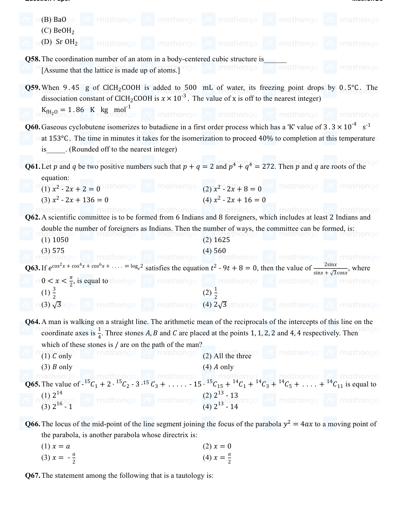

🧪 Atomic Structure
80
Total Questions
5
Years
3
Clusters
Question Clusters
CHEM-ATOMSTRU-BOHR_MODEL_TRANSITIONS
Atomic Structure: Bohr Energy Levels & Spectral Transitions
CHEM-ATOMSTRU-QUANTUM_NUMBERS_ELECTRONIC_CONFIG
Atomic Structure: Quantum Numbers, Orbitals & Aufbau/Hund Rules
CHEM-ATOMSTRU-DE_BROGLIE_HEISENBERG
Atomic Structure: de Broglie Wavelength & Heisenberg Uncertainty
Year-wise Frequency
| Year | Questions | Frequency |
|---|---|---|
| 2021 | 22 | |
| 2022 | 11 | |
| 2023 | 15 | |
| 2024 | 24 | |
| 2025 | 8 |
Questions
Showing first 50 of 80 questions.
Q43 (2021 Shift 2)
Identify the element for which electronic configuration in oxidation state is d5: +3 [Ar]3
CHEM-2021-0101-S2-Q043
Q52 (2021 Shift 2)
The number of orbitals with n = 5, m1 = +2 is ________. (Round off to the Nearest Integer).
Answer:
3CHEM-2021-0101-S2-Q052
Q53 (2021 Shift 1)
A certain orbital has n = 4 and ml = −3. The number of radial nodes in this orbital is _______. (Round off to the Nearest Integer).
Answer:
0CHEM-2021-0101-S1-Q053
Q31 (2021 Shift 1)
A certain orbital has no angular nodes and two radial nodes. The orbital is:
CHEM-2021-0101-S1-Q031
Q51 (2021 Shift 1)
The Azimuthal quantum number for the valence electrons of Ga+ ion is (Atomic number of Ga = 31 )
Answer:
0CHEM-2021-0101-S1-Q051
Q31 (2021 Shift 2)
Outermost electronic configuration of a group 13 element, E, is 4 s2, 4p1. The electronic configuration of an element of p-block period-five placed diagonally to element, is: E
CHEM-2021-0101-S2-Q031
Q33 (2021 Shift 1)
Match List-I with List-II List - I List - II (Elements) (Properties)
CHEM-2021-0101-S1-Q033
Q52 (2021 Shift 1)
Number of electrons that Vanadium has in p-orbitals is equal to: (Z = 23)
Answer:
12CHEM-2021-0101-S1-Q052
Q31 (2021 Shift 2)
According to Bohr's atomic theory:
CHEM-2021-0101-S2-Q031
Q32 (2021 Shift 1)
The plots of radial distribution functions for various orbitals of hydrogen atom against ' r′ are given below. The correct plot for orbital is : 3s

CHEM-2021-0101-S1-Q032
Q45 (2021 Shift 1)
In which of the following pairs, the outermost electronic configuration will be the same?
CHEM-2021-0101-S1-Q045
Q60 (2021 Shift 2)
Number of electrons present in 4f orbital of Ho3+ ion is ________ (Given Atomic No. of Ho =67)
Answer:
10CHEM-2021-0101-S2-Q060
Q59 (2021 Shift 1)
The number of electrons in the ground state electronic configuration of Gd2+ is [Atomic number of 4f Gd = 64]
Answer:
7CHEM-2021-0101-S1-Q059
Q31 (2021 Shift 1)
The orbital having two radial as well as two angular nodes is:
CHEM-2021-0101-S1-Q031
Q32 (2021 Shift 1)
Match List- I with List- II . List- I List- II Electronic configuration of elements ΔiH in kJ mol−1
CHEM-2021-0101-S1-Q032
Q33 (2021 Shift 2)
Given below are two statements: one is labelled as Assertion A and the other is labelled as Reason R . Assertion A : In TlI3, isomorphous to CsI3 , the metal is present in +1 oxidation state. Reason R : Tl metal has fourteen f electrons in its electronic configuration. In the light of the above statements, choose the most appropriate answer from the options given below:
CHEM-2021-0101-S2-Q033
Q53 (2021 Shift 1)
The number of f electrons in the ground state electronic configuration of Np(Z = 93) is ______ .(Integer answer)
Answer:
18CHEM-2021-0101-S1-Q053
Q58 (2021 Shift 1)
The kinetic energy of an electron in the second Bohr orbit of a hydrogen atom is equal to x ma2 . The value of 10 x is ( a0 is radius of Bohr's orbit) 0 (Nearest integer) [Given: π = 3. 14 ]

Answer:
3155CHEM-2021-0101-S1-Q058
Q36 (2021 Shift 2)
Given below are two statements : Statement I : Hyperconjugation is a permanent effect. (CH3 CH2) + Statement II : Hyperconjugation in ethyl cation − involves the overlapping of Csp2 −H1 bond s with empty 2p orbital of other carbon. Choose the correct option:
CHEM-2021-0101-S2-Q036
Q51 (2021 Shift 1)
Ge (Z = 32) in its ground state electronic configuration has x completely filled orbitals with ml = 0. The value of x is __________ .
Answer:
7CHEM-2021-0101-S1-Q051
Q43 (2021 Shift 2)
The Eu2 + ion is a strong reducing agent in spite of its ground state electronic configuration (outermost) : [Atomic number of ] Eu = 63
CHEM-2021-0101-S2-Q043
Q51 (2021 Shift 2)
The value of magnetic quantum number of the outermost electron of Zn+ ion is _________ . (Integer answer)
Answer:
0CHEM-2021-0101-S2-Q051
Q44 (2022 Shift 2)
PCl5 is well known but NCl5 is not.Because,
CHEM-2022-0101-S2-Q044
Q31 (2022 Shift 2)
The number of radial and angular nodes in 4 d orbital are, respectively
CHEM-2022-0101-S2-Q031
Q60 (2022 Shift 2)
Reaction of [Co (H2O)6]2+ with excess ammonia and in the presence of oxygen results into a diamagnetic product. Number of electrons present in t2g -orbitals of the product is
Answer:
6CHEM-2022-0101-S2-Q060
Q51 (2022 Shift 1)
If the uncertainty in velocity and position of a minute particle in space are, 2. 4 × 10−26(ms−1) and 10−7(m) respectively. The mass of the particle in g is___(Nearest integer) (Given : h = 6. 626 × 10−34 Js )
Answer:
22CHEM-2022-0101-S1-Q051
Q43 (2022 Shift 2)
The ' f ' orbitals are half and completely filled, respectively in lanthanide ions [Given : Atomic no. Eu, 63 : Sm, 62 : Tm, 69; Tb, 65; Yb, 70; Dy, 66 ] Eu2+ Tm2+ Sm2+ Tm3+
CHEM-2022-0101-S2-Q043
Q52 (2022 Shift 2)
Consider the following set of quantum numbers. n l m1 A 3 3 −3 B 3 2 −2 C 2 1 +1 D 2 2 +2 The number of correct sets of quantum numbers is
Answer:
2CHEM-2022-0101-S2-Q052
Q32 (2022 Shift 2)
Consider the following statements :
CHEM-2022-0101-S2-Q032
Q36 (2022 Shift 2)
Hydrogen has three isotopes : protium (1H) , deuterium ( 2H or ) and tritium ( 3H or ). They have nearly D T same chemical properties but different physical properties. They differ in
CHEM-2022-0101-S2-Q036
Q32 (2022 Shift 1)
Which of the following statements are correct?
CHEM-2022-0101-S1-Q032
Q33 (2022 Shift 1)
The electronic configuration of Pt (atomic number 78 ) is
CHEM-2022-0101-S1-Q033
Q32 (2022 Shift 2)
Which of the following is the correct plot for the probability density ψ2(r) as a function of distance ′r′ of the electron form the nucleus for 2s orbital?
CHEM-2022-0101-S2-Q032
Q43 (2023 Shift 1)
Which of the following complex will show largest splitting of d-orbitals?
CHEM-2023-0101-S1-Q043
Q33 (2023 Shift 2)
The number of atomic orbitals from the following having 5 radial nodes is 7s, 7p, 6s, 8p, 8d
CHEM-2023-0101-S2-Q033
Q60 (2023 Shift 1)
In potassium ferrocyanide, there are ______ pairs of electrons in the t2g set of orbitals.

Answer:
3CHEM-2023-0101-S1-Q060
Q33 (2023 Shift 2)
The number of correct statements from the following is ........... A. For 1s orbital, the probability density is maximum at the nucleus B. For 2s orbital, the probability density first increases to maximum and then decreases sharply to zero. C. Boundary surface diagrams of the orbitals encloses a region of 100% probability of finding the electron. D. p and d -orbitals have 1 and 2 angular nodes respectively E. probability density of p -orbital is zero at the nucleus
CHEM-2023-0101-S2-Q033
Q32 (2023 Shift 1)
Given below are two statement : one is labelled as Assertion A and the other is labelled as Reason R Assertion A : 5f electron can participate in bonding to a far greater extent than 4f electrons Reason R : 5f orbitals are not as buried as 4f orbitals In the light of the above statements, choose the correct answer from the options given below
CHEM-2023-0101-S1-Q032
Q32 (2023 Shift 1)
The energy of an electron in the first Bohr orbit of hydrogen atom is −2. 18 × 10−18 J Its energy in the third Bohr orbit is _______.
CHEM-2023-0101-S1-Q032
Q52 (2023 Shift 2)
The xh orbital angular momentum of an electron in 3 s orbital is 2π. The value of x is (nearest integer)
Answer:
0CHEM-2023-0101-S2-Q052
Q31 (2023 Shift 1)
Given below are two statements Statement I : According to Bohr’s model of hydrogen atom, the angular momentum of an electron in a given stationary state is quantised. Statement II : The concept of electron in Bohr’s orbit, violates the Heisenberg uncertainty principle. In the light of the above statements, choose the most appropriate answer from the options given below
CHEM-2023-0101-S1-Q031
Q59 (2023 Shift 1)
The d-electronic configuration of 2 - in tetrahedral crystal field is emt2 n. The sum of and number of CoCl4 m unpaired electrons is
Answer:
7CHEM-2023-0101-S1-Q059
Q32 (2023 Shift 2)
The number of given orbitals which have electron density along the axis is px, py, pz, dxy, dyz, dxz, d2 z, dx2−y2
CHEM-2023-0101-S2-Q032
Q31 (2023 Shift 1)
The shortest wavelength of hydrogen atom in Lyman series is λ . The longest wavelength in Balmer series of He+ is
CHEM-2023-0101-S1-Q031
Q31 (2023 Shift 2)
Assume that the radius of the first Bohr orbit of hydrogen atom is 0. 6Å . The radius of the third Bohr orbit of He+ is _____ picometer. (Nearest Integer)
Answer:
2CHEM-2023-0101-S2-Q031
Q31 (2023 Shift 1)
Which transition in the hydrogen spectrum would have the same wavelength as the Balmer type transition from n = 4 to n = 2 of He+spectrum
CHEM-2023-0101-S1-Q031
Q33 (2023 Shift 2)
Arrange the following orbitals in decreasing order of energy. A. n = 3, l = 0, m = 0 B. n = 4, l = 0, m = 0 C. n = 3, l = 1, m = 0 D. n = 3, l = 2, m = 1 The correct option for the order is:
CHEM-2023-0101-S2-Q033
Q52 (2023 Shift 2)
Which of the following elements have half-filled f-orbitals in their ground state ? (Given : atomic number Sm −62; Eu = 63; Tb = 65; Gd = 64, Pm = 61 ) Choose the correct answer from the options given below : (1) A and B only (2) C and D only (3) B and D only (4) A and E only
Answer:
5CHEM-2023-0101-S2-Q052
Q32 (2024 Shift 1)
In case of isoelectronic species the size of Ne and is affected by:
CHEM-2024-0101-S1-Q032
Q31 (2024 Shift 2)
The number of radial node/s for 3p orbital is:
CHEM-2024-0101-S2-Q031